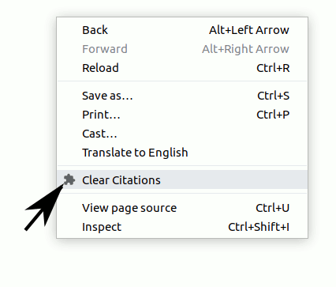
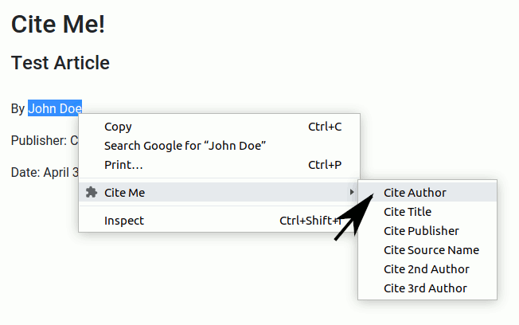
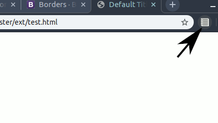
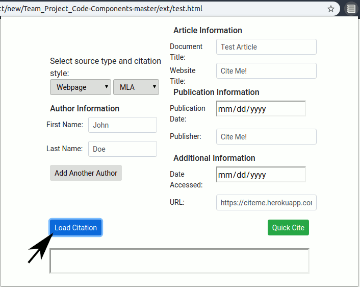
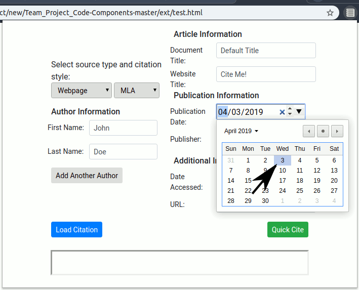
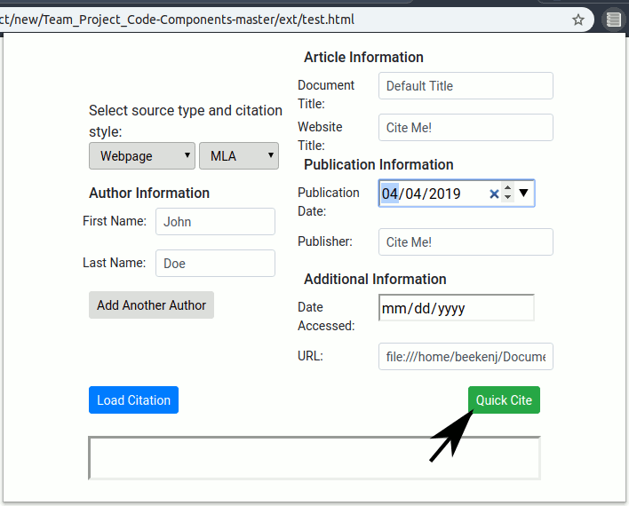
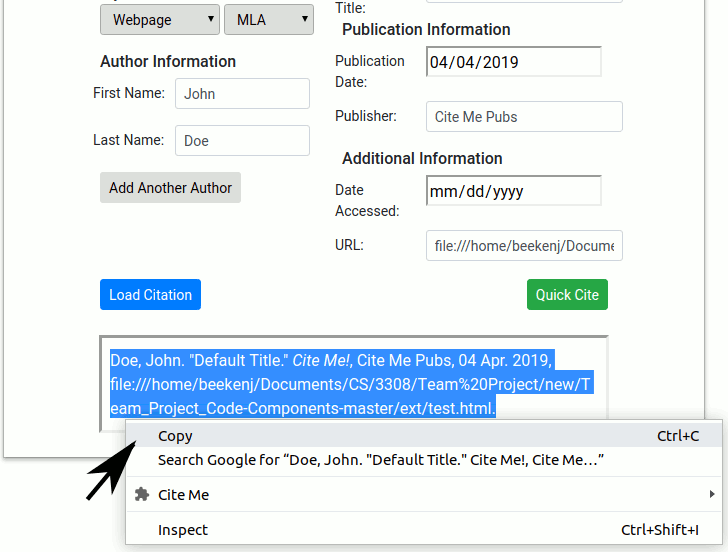

First, reload the page you're trying to cite. Now, right click and select "Clear Citations" (as above).

Next, select any text you would like to add to your citation (author for example). Right click and go to the "Cite Me" menu, select citation value.

Click the extension icon next to the chrome address bar.

The extension popup should appear. Click the "Load Citation" button. Selected values should be loaded to appropriate fields. You can also change the citation source type and style with the dropdowns above the author fields.

Select the publication date if available.

Click the "Quick Cite" button to create citation.

Select the citation text and copy. You can now paste the citation into your paper!